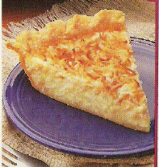

Coconut Custard Pie

Directions
- Preheat oven to 425 degrees. Toast 1/2 cup coconut; set aside. Bake pastry shell 8 minutes; cool slightly. Meanwhile, in medium bowl, beat eggs. Add sweetened condensed milk, water, vanilla, salt and nutmeg; mix well. Stir in remaining 1/2 cup coconut. Bake 10 minutes. Reduce oven temperature to 350 degrees, bake 25 to 30 minutes longer or until knife inserted near center comes out clean. Cool. Chill if desired. Refrigerate leftovers.
- For custard pie just eliminate the coconut